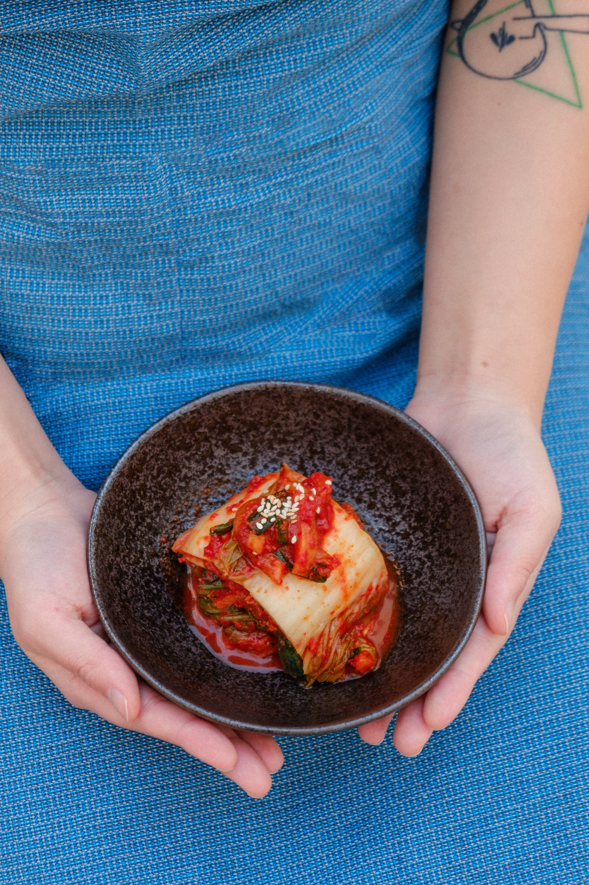

KIMCHI RECIPE

if you love authentic Korean cuisine, you'll want to try your hand at creating your own kimchi;
it's not as complicated or time-consuming as you might think.Kimchi is a fermented dish, the more it ages the better it tastes,
likewise with the sugar.Use a persimmon in place of the apple, if you prefer.
If you want to serve it the very next day, don't refrigerate.
INGRIDIENTS
- 1 head napa cabbage, shredded and rinsed
- 1 small radish, cubed
- coarse salt to taste
- 6 cloves garlic, peeled
- 1 small white onion
- 1 (1 inch) piece fresh ginger
- 1 tablespoon rice vinegar
- 1/4 cup water, or as needed
- 1 ripe persimmon, chopped
- 1 cucumber, chopped (Optional)
- 3 medium green onions, minced
- 1 pinch red pepper flakes, or to taste
HOW TO PREPARE
step-1
Place cabbage and radish in a large colander.
Sprinkle liberally with salt and mix to combine.
Set aside for 1 hour. Add additional salt, mix, and set aside 1 hour more.
Rinse cabbage and let drain.
step-2
Meanwhile, combine garlic, onion, ginger, and rice vinegar in a blender.
Add water and blend aromatic mixture on high power.
step-3
Transfer drained cabbage to a large bowl and add aromatic mixture.
Add persimmon, cucumber, green onions, and red pepper flakes and mix well.
step-4
Transfer kimchi to airtight containers and refrigerate for 3 days.
NUTRITIONAL FACTS
Per Serving:
9 calories; protein 0.4g; carbohydrates 2.1g; fat 0.1g; sodium 19.2mg. Full Nutrition
go back
go up